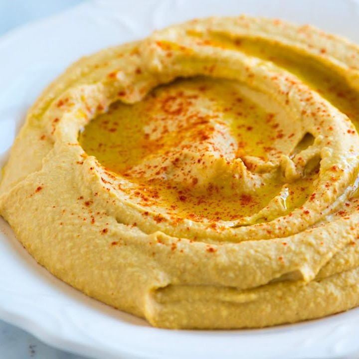
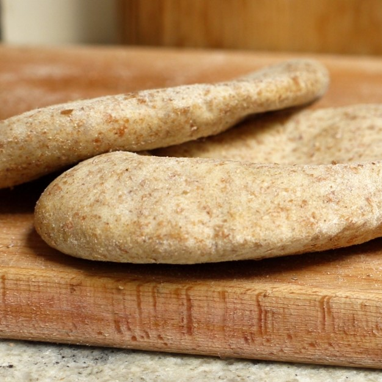
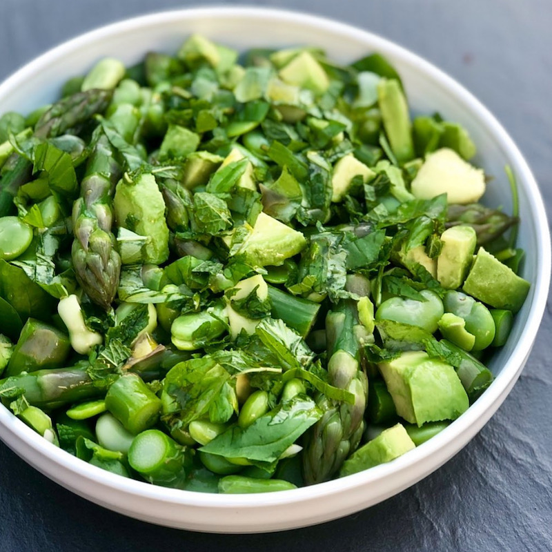
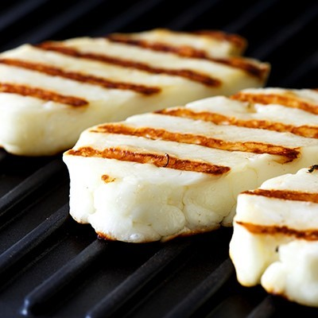

Recipe list
Paragraph for reference, paragraph for reference, paragraph for reference, paragraph for reference, paragraph for reference, paragraph for reference.
- Toast pitta, leave to cool, then slice down the edge.
- Fry the halloumi in a shallow, non-stick pan, until browned on both sides.
- Wash and chop the salad.
- Fill pitta with salad, humous, and fried halloumi.
Ingredient description list
Paragraph for reference, paragraph for reference, paragraph for reference, paragraph for reference, paragraph for reference, paragraph for reference.
- Humous
- A thick dip/sauce generally made from chick peas blended with tahini, lemon juice, salt, garlic, and other ingredients.
- Pitta
- A soft, slightly leavened flatbread.
- Halloumi
- A semi-hard, unripened, brined cheese with a higher-than-usual melting point, usually made from goat/sheep milk.
- Green salad
- That green healthy stuff that many of us just use to garnish kebabs.